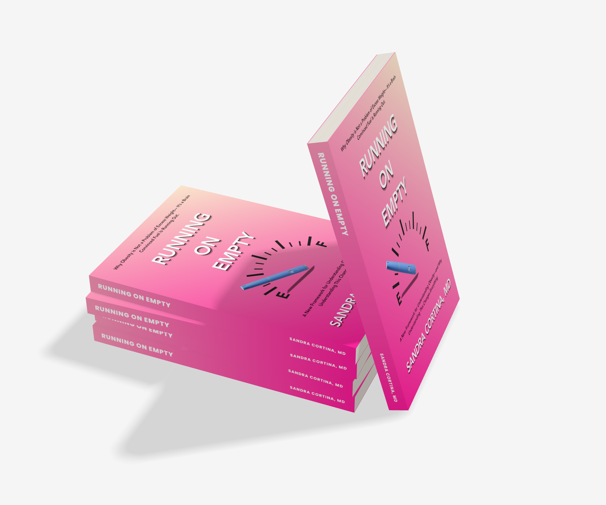
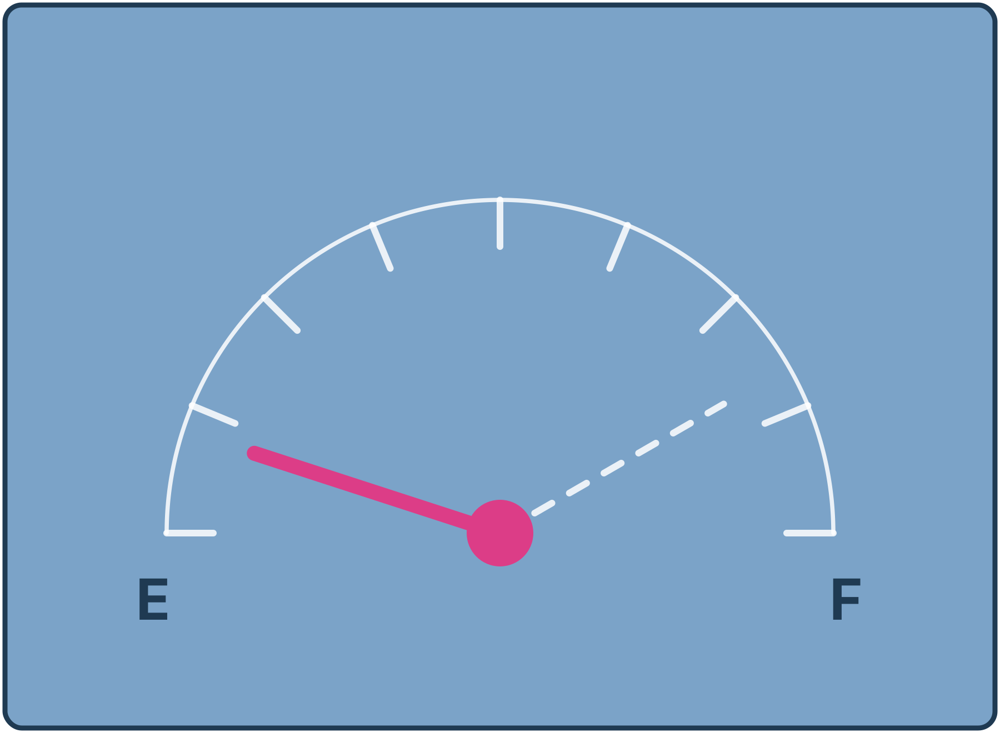

Make sense of the signals
See hunger, plateaus, and regain through a biological framework instead of a personal failing.
A new framework for understanding obesity
The explanation of your biology you should have been given years ago.

The book
What if it is defending itself exactly as it was designed to?
In Running on Empty, obesity medicine specialist Dr. Sandra Cortina introduces a new framework for understanding obesity: a brain convinced fuel is running low, even when the tank is full.
Hunger, plateaus, and regain can feel confusing or shameful. This book offers a way to understand those experiences with clarity instead of self-blame, including a grounded look at GLP-1 medications and the culture surrounding them.
Explore the central ideaThis isn't another weight loss book.
It's a different way to understand obesity.
The idea at the center
"Obesity isn't a problem of excess weight. It's a brain convinced fuel is running out."
GLP-1 medications have changed obesity care, but few people understand why they work, or why stopping them leads to regain. Running on Empty answers both. When weight comes off, the signal that tells the brain its energy reserves are secure grows weaker, and the brain responds as if fuel were running out, turning up hunger and turning down fullness.
Long-acting GLP-1 therapies provide a sustained fullness signal that helps make up for what the brain is no longer receiving. Understanding this reframes treatment. It's not about willpower or quick fixes. It's about giving the brain the signal it needs to stop defending against a fuel shortage that isn't there.
Read a Sample
Free — Because it should be
When reliable health information sits behind a paywall, diet culture fills the void. Too many people living with obesity have been sold quick fixes instead of real answers. I've made Running on Empty free to download so that anyone living with obesity can have access evidence-based information and understanding, whatever their budget.
A clearer lens
See hunger, plateaus, and regain through a biological framework instead of a personal failing.
Get a clearer perspective on GLP-1 medications and the messages surrounding them.
Replace finish-line thinking with a stewardship mindset that supports long-term weight management without self-blame.
Frequently asked questions
No. Running on Empty is not another diet plan or weight loss book. It is a framework for understanding obesity and the biology behind it.
No. The book is educational and is not a substitute for individual medical care. Talk with your healthcare professional about your own health and treatment.
All of it. You get the complete book, every chapter, free. It downloads directly with no email signup.